Understanding 4-Bit Quantization: QLoRA Explained (with Colab)
Based on the Discover AI video lecture: "Understanding 4bit Quantization: QLoRA explained (w/ Colab)", walking through Dettmers et al. (2023), QLoRA: Efficient Finetuning of Quantized LLMs. Click any slide frame to inspect it at full 1080p resolution or jump directly to the corresponding timestamp in the video.
1. The Goal: Fine-Tuning a 65B LLM on a Single 48 GB GPU
How can you squeeze a massive Large Language Model onto a single GPU so that you can fine-tune it on your own custom dataset? Specifically, how can you fine-tune a 65-billion-parameter LLaMA model on a single 48 GB GPU, or fine-tune the Falcon 40B-Instruct model on a single 40 GB NVIDIA GPU?
In standard 16-bit fine-tuning, a 65B model requires over 780 GB of VRAM once you store the 16-bit weights (~130 GB), 16-bit gradients (~130 GB), and 32-bit AdamW optimizer states (~520 GB for the FP32 master weights, first moment $m$, and second moment $v$). That forces practitioners onto an 8×80 GB A100 node or a multi-node cluster.
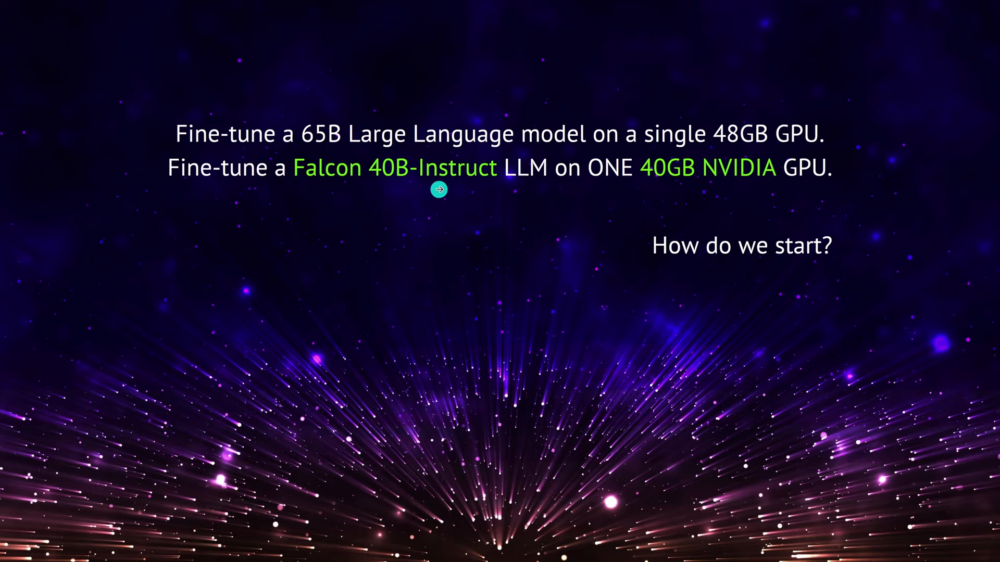
The solution introduced by QLoRA (Quantized Low-Rank Adaptation) combines two ideas that previously seemed incompatible:
- 4-bit quantization of the pretrained base weights (shrinking the frozen model footprint by 4× compared to 16-bit and 8× compared to 32-bit), and
- Parameter-Efficient Fine-Tuning (PEFT) via LoRA (training only a tiny ~1% set of high-precision adapter weights injected across the transformer layers).
Following the exact sequence of the lecture, we will unpack:
- The core concepts of QLoRA and the fundamental Memory vs. Compute (Time) trade-off;
- Why pure 4-bit quantization (16 discrete levels) fails catastrophically when you try to train it directly;
- How QLoRA separates the 4-bit NormalFloat (NF4) storage data type from the 16-bit BrainFloat (BF16) computation data type;
- A step-by-step numerical walkthrough of 4-bit NormalFloat quantization (converting a 32-bit weight $0.5678 \to 0.6$ at level 13 and measuring the $0.0322$ dequantization error), plus Blockwise and Double Quantization;
- The 3D geometric mental model of 100 frozen 4-bit weights + 1 high-precision 32-bit LoRA weight—showing how forward and backward dequantization waves flow through the network and why the high-precision LoRA adapter automatically compensates for the base weights' 4-bit dequantization errors;
- Empirical proof on LLaMA 7B–65B (5-shot MMLU) and the Guanaco chatbot trained on OpenAssistant (OASST1);
- A complete, line-by-line Google Colab walkthrough fine-tuning Falcon-7B in 4-bit NF4 on a free Tesla T4 GPU.
2. Core Concepts of QLoRA & The Memory-vs-Compute Trade-Off
QLoRA was introduced in May 2023 by Tim Dettmers, Artidoro Pagnoni, Ari Holtzman, and Luke Zettlemoyer at the University of Washington (arXiv:2305.14314). Let's examine the exact claims highlighted in the paper's abstract:
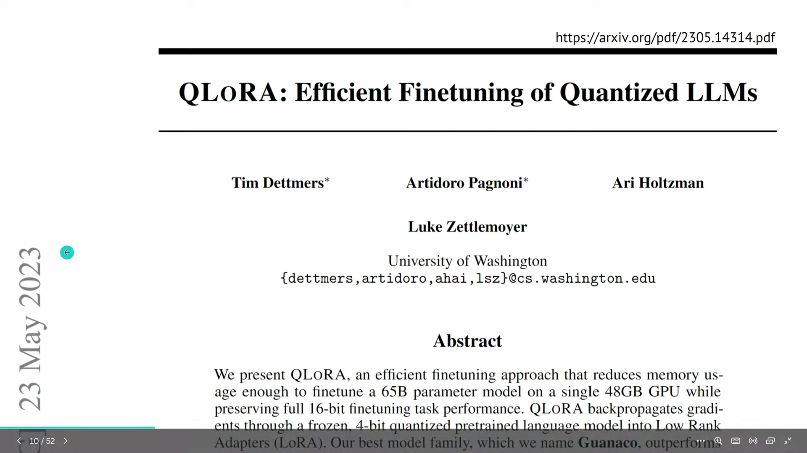
- Single-GPU 65B Fine-Tuning without Accuracy Loss: QLoRA reduces memory usage enough to fine-tune a 65B parameter model on a single 48 GB GPU while preserving full 16-bit fine-tuning task performance.
- Frozen 4-Bit Base + Trainable LoRA Gradients: QLoRA backpropagates gradients through a frozen, 4-bit quantized pretrained language model into Low-Rank Adapters (LoRA).
- Guanaco Family: Their best model family, Guanaco, outperforms all previous openly released models on the Vicuna benchmark, reaching 99.3% of the performance level of ChatGPT while only requiring 24 hours of fine-tuning on a single GPU.
- Three Technical Innovations:
- 4-bit NormalFloat (NF4): A new data type that is information-theoretically optimal for normally distributed weights;
- Double Quantization: Reducing the average memory footprint by quantizing the quantization constants themselves;
- Paged Optimizers: Using NVIDIA unified memory to avoid gradient checkpointing memory spikes when processing mini-batches with long sequence lengths.
The Fundamental Trade-Off: Memory vs. Compute Time
Before diving into the math, there is one universal systems principle you must keep in mind whenever you study quantization: there is no free lunch between memory and compute time.
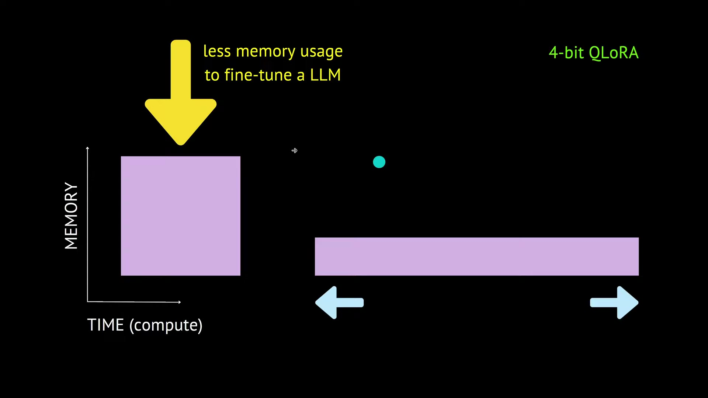
Think of the workload block in the diagram above as an incompressible volume on a 2D graph where the vertical axis is Memory (VRAM) and the horizontal axis is Time (Compute):
- When you push down on the top of the box to reduce memory (packing 32-bit or 16-bit weights into 4-bit codes), the box must expand horizontally along the Time (Compute) axis.
- Why? Because GPUs cannot perform high-precision matrix multiplications directly on compressed 4-bit NormalFloat indices. Every time a layer executes in the forward pass or backward pass, the GPU must perform extra mathematical transformations (looking up codebook values and multiplying by block scaling constants) to dequantize those 4-bit weights back into 16-bit or 32-bit floats.
- Thus, QLoRA trades a modest increase in per-step compute time for a massive reduction in GPU memory—turning an impossible hardware requirement (16 GPUs) into a single-GPU job.
3. First Idea: Why Not Just Convert All Weights to 4-Bit and Train?
To appreciate why QLoRA is designed the way it is, let's start with the most naive idea first. If 4-bit weights save 8× memory compared to 32-bit floats, why not simply convert all weights of the LLM into a 4-bit format and fine-tune the 4-bit weights directly?
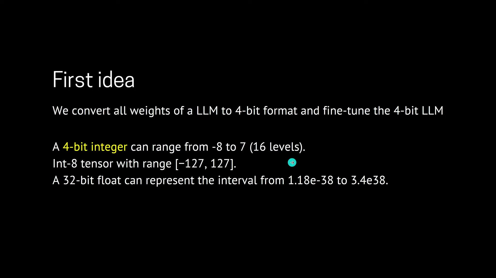
Look at the numerical resolution of the three formats on the slide:
- 32-bit Floating Point (FP32): Can represent continuous-like magnitudes from $1.18 \times 10^{-38}$ to $3.4 \times 10^{38}$ ($2^{32} \approx 4.29 \times 10^9$ bit patterns).
- 8-bit Integer (Int8): Represents integers from $-127$ to $127$ ($255$ symmetric levels, or $256$ total patterns).
- 4-bit Format: Has only $2^4 = \mathbf{16}$ possible values (e.g., integers from $-8$ to $7$, or $0$ to $15$).
Imagine taking billions of carefully pretrained floating-point weights and forcing every single one of them onto just 16 discrete rungs of a ladder:
- Massive quantization error: Every weight is rounded to the nearest of 16 values, introducing a large rounding error across every layer of the network.
- Gradient updates cannot accumulate: During backpropagation, a weight update $\Delta w = -\eta \frac{\partial \mathcal{L}}{\partial w}$ with learning rate $\eta = 2 \times 10^{-4}$ is tiny—orders of magnitude smaller than the gap between two adjacent 4-bit levels. If you try to store updated weights back into 4-bit, small updates vanish completely (rounding back to the exact same 4-bit level), while larger updates jump erratically across coarse rungs.
Before QLoRA, researchers had already shown that you can quantize a trained model to 4-bit for inference (running the forward pass only) with acceptable degradation. But training or fine-tuning a model directly in 4-bit fails because the 16-level grid is far too coarse to accumulate gradient updates.
4. Second Idea: 4-Bit Quantized Base Weights + High-Precision LoRA Adapters
Since we cannot train 4-bit weights directly, how do we make a 4-bit model trainable? This brings us to the second core idea:
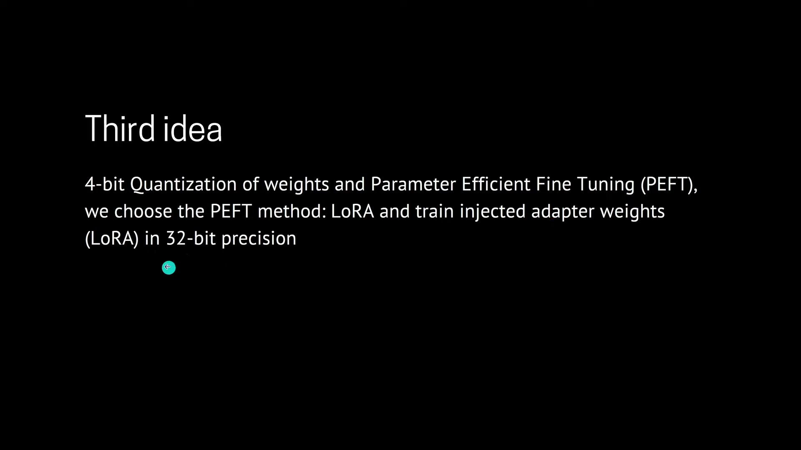
Instead of updating the 4-bit base weights, we combine two distinct mechanisms:
- 4-bit quantization of the pretrained weights: All original weights of the 65B model are quantized to 4-bit and frozen. They will never be updated by the optimizer.
- Parameter-Efficient Fine-Tuning (PEFT) via LoRA: We inject a small number of trainable Low-Rank Adapter (LoRA) weights alongside the frozen 4-bit linear layers, and we keep those injected adapter weights in high precision (16-bit BrainFloat or 32-bit Float).
5. Storage Data Type vs. Computation Data Type
How can a network contain both 4-bit weights and 16-bit/32-bit adapter weights in the same forward and backward pass? You cannot directly multiply a 4-bit NormalFloat code by a 16-bit activation vector in a GPU Tensor Core. QLoRA resolves this by introducing two distinct data types:
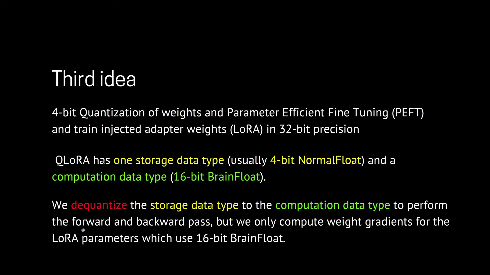
"QLoRA has one storage data type (usually 4-bit NormalFloat) and one computation data type (16-bit BrainFloat). In practice, this means whenever a QLoRA weight tensor is used, we dequantize the tensor to 16-bit BrainFloat and then perform a 16-bit matrix multiplication."
"In our finetuning through 4-bit weights, we dequantize the storage data type to the computation data type to perform the forward and backward pass, but we only compute weight gradients for the LoRA parameters which use 16-bit BrainFloat."
Notice what this separation achieves:
- At rest in GPU VRAM (Storage): The 65 billion base weights sit compressed in 4-bit NormalFloat (NF4), occupying only ~33 GB instead of ~130 GB (in 16-bit) or ~260 GB (in 32-bit).
- In flight during matrix multiplication (Computation): When layer $\ell$ executes, its 4-bit weight matrix $W_\ell^{\text{NF4}}$ is dynamically dequantized into a temporary 16-bit BrainFloat ($\text{BF16}$) buffer $W_\ell^{\text{BF16}}$ (or 32-bit float in our conceptual diagrams below), multiplied by the input activations, and immediately discarded before layer $\ell+1$ runs.
6. Third Idea: 4-Bit NormalFloat (NF4) Quantization Step-by-Step
How does QLoRA compress continuous 32-bit or 16-bit weights into 4 bits while losing as little information as possible? Standard uniform 4-bit quantization spaces its 16 levels evenly across $[-\max|w|, +\max|w|]$. However, pretrained neural network weights are not uniformly distributed—they cluster tightly around zero following a bell-shaped Normal (Gaussian) distribution $\mathcal{N}(0, \sigma^2)$.
QLoRA introduces 4-bit NormalFloat (NF4) quantization, which proceeds in three explicit steps:
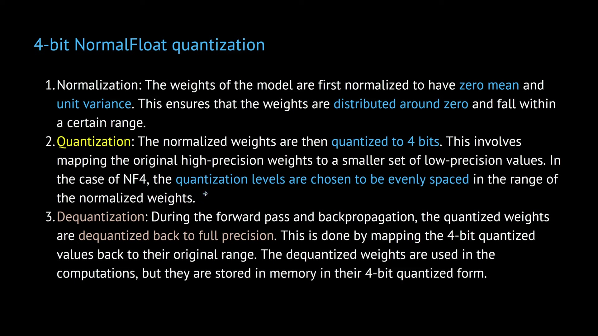
- Step 1 — Normalization: The weights of the model are first normalized so that they have a zero mean and unit variance, and scaled into the standard range $[-1, 1]$. This ensures that the weights fall within a predictable, shared interval, which is crucial for effective quantization into a fixed 16-entry lookup table.
- Step 2 — Quantization: The normalized weights are then quantized to 4 bits. This means that instead of using 32 bits to represent each weight, only 4 bits are used. Because the weights are normalized, the 16 possible values ($2^4 = 16$) that can be represented by 4 bits are placed across the normalized range $[-1, 1]$. Each weight is rounded to the closest value among these 16 levels, and only its 4-bit index ($0 \dots 15$) is stored in memory.
- Step 3 — Dequantization: During the forward and backward passes of training, the quantized weights are dequantized back to full precision (16-bit BF16 or 32-bit FP32). This is done by mapping the 4-bit integer index back to its corresponding floating-point level in the normalized range and rescaling by the normalization constant.
Worked Numerical Example: Quantizing $0.5678 \to 0.6$ and Finding the Dequantization Error
To make this concrete, let's trace the exact numerical example from the lecture. Suppose after normalization into $[-1, 1]$, we have a single 32-bit floating-point weight:
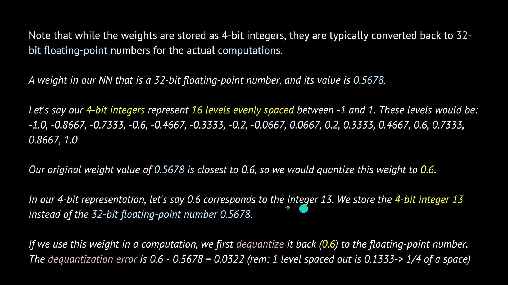
For arithmetic simplicity on the slide, divide the interval $[-1, 1]$ (total width $2.0$) into $16$ evenly spaced levels separated by step size $\Delta = \frac{2}{15} \approx 0.1333$:
(Note: In the exact NormalFloat4 codebook of Dettmers et al., these 16 values in $[-1, 1]$ are spaced using the quantiles of $\mathcal{N}(0,1)$ so that levels are denser near $0$ and sparser near $\pm 1$—see our companion NF4 deep dive in the Quantization series for the exact Gaussian quantile table. The lookup and rounding mechanics are identical.)
Now follow what happens to $w_{\text{FP32}} = 0.5678$:
- Quantization (Float $\to$ 4-bit Index): We compare $0.5678$ against the 16 levels in the list. It falls between $0.4667$ (distance $|0.5678 - 0.4667| = 0.1011$) and $0.6$ (distance $|0.6 - 0.5678| = 0.0322$). The closest level in the list is $0.6$. Counting from the left ($1$-indexed), $0.6$ is the 13th level in the list (or index `12` in $0$-based indexing). Therefore, the weight $0.5678$ is quantized to the 4-bit integer `13` (`1101` in binary). That 4-bit integer is all that gets stored in GPU RAM!
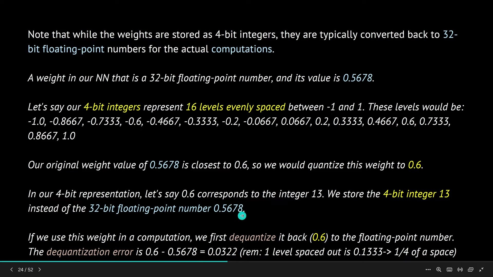
- Dequantization (4-bit Index $\to$ Float): During the forward and backward passes, the GPU reads the 4-bit integer
13, looks up the 13th entry in the level table, and reconstructs the 32-bit floating-point number $0.6$. - The Dequantization Error: We started with $0.5678$, quantized to 4-bit index $13$, and dequantized back to $0.6$. We cannot recover the exact digits $.5678$ because that information was discarded during rounding. The resulting dequantization error is:
$$\varepsilon_{\text{dequant}} = \widehat{w} - w = 0.6 - 0.5678 = \mathbf{0.0322}$$Since the spacing between adjacent levels is $\Delta \approx 0.1333$, an error of $0.0322$ is roughly one-quarter of a quantization step ($\frac{0.0322}{0.1333} \approx 0.242 \approx \frac{1}{4}\Delta$). Keep this number—$0.0322$—in mind, because we will see shortly how the 3D LoRA hyperplane geometry cancels it out!
7. Blockwise Quantization & Double Quantization
Before moving to the LoRA training dynamics, Slide 10 shows the exact mathematical equations from the QLoRA paper for how weights are scaled into the normalized interval and how Blockwise Quantization and Double Quantization work.
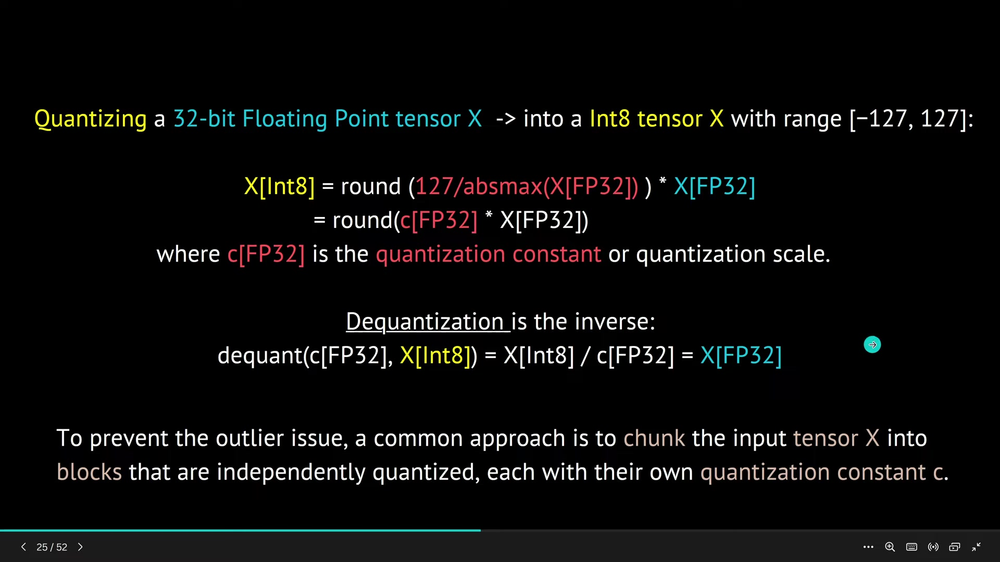
- Absmax Scaling Constant $c$: To map an arbitrary floating-point weight tensor $X^{\text{FP32}}$ into a normalized range, we divide by the maximum absolute value $\operatorname{absmax}(X^{\text{FP32}})$. For example, in 8-bit integer quantization ($[-127, 127]$):
$$X^{\text{Int8}} = \operatorname{round}\!\left(\frac{127}{\operatorname{absmax}\!\left(X^{\text{FP32}}\right)} X^{\text{FP32}}\right) = \operatorname{round}\!\left(c^{\text{FP32}} \cdot X^{\text{FP32}}\right)$$where $c^{\text{FP32}} = \frac{127}{\operatorname{absmax}(X^{\text{FP32}})}$ is the quantization constant (scale). Dequantizing simply divides by $c^{\text{FP32}}$:$$\operatorname{dequant}\!\left(c^{\text{FP32}},\, X^{\text{Int8}}\right) = \frac{X^{\text{Int8}}}{c^{\text{FP32}}}$$In 4-bit NormalFloat (NF4), the exact same normalization divides each weight block by $\operatorname{absmax}(X_b) \in [-1, 1]$ so the normalized values can be matched against the 16 NF4 codebook levels $q_i \in [-1, 1]$.
- Why Blockwise Chunking ($B = 64$)? What if a weight matrix has a single large outlier weight (say, $w = 10.0$ while 99.9% of weights lie in $[-0.5, 0.5]$)? If you compute a single $\operatorname{absmax}$ across the entire matrix, that one outlier stretches the scale so wide that all normal weights get squashed into the middle one or two bins! To prevent this, QLoRA chunks the weight tensor into small contiguous blocks of $B = 64$ weights, computing a separate scaling constant $c_b$ for every 64 weights. An outlier in block $b$ only affects those 64 weights, leaving every other block at full resolution.
- What is Double Quantization (DQ)? Because each block of $64$ weights needs its own 32-bit scaling constant $c^{\text{FP32}}$, storing those constants costs $\frac{32\text{ bits}}{64\text{ weights}} = \mathbf{0.5\text{ bits per weight}}$ (making our "4-bit" model actually $4.5$ bits per weight!). Double Quantization treats the scaling constants $c_1^{\text{FP32}}$ themselves as a tensor and quantizes them into 8-bit floats ($c_2^{\text{FP8}}$) in blocks of $256$, requiring only one second-level 32-bit scale per $256 \times 64 = 16{,}384$ weights:
$$\text{Metadata overhead}_{\text{DQ}} = \frac{8}{64} + \frac{32}{64 \times 256} = 0.125 + 0.00195 \approx \mathbf{0.127\text{ bits/weight}}$$This saves $0.5 - 0.127 = 0.373$ bits per parameter—freeing over 3 GB of VRAM on a 65B model with zero accuracy loss!
8. Fourth Idea: The 100-Weight Grid & Forward/Backward Dequantization Waves
Now let's put 4-bit NormalFloat together with LoRA and visualize how information flows through the neural network during training. In the lecture, this is illustrated with a clean geometric grid:
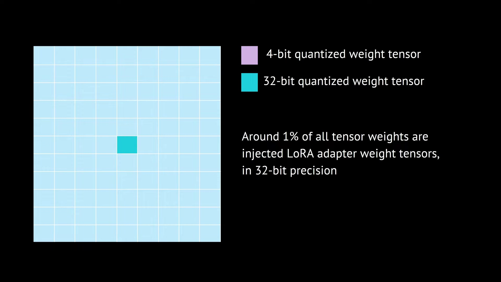
- The 100 light-blue cubes ($10 \times 10$ grid) represent the pretrained weights of the Large Language Model—quantized to 4-bit NormalFloat and frozen.
- The 1 bright-cyan cube in the center represents the injected LoRA adapter weights, kept in 32-bit (or 16-bit BF16) high precision and marked trainable.
Why 1% of Weights Is Still Massive at LLM Scale
Looking at 1 cyan cube among 100 blue cubes, you might wonder: "How can training just 1% of the weights possibly be enough to teach a language model a complex new task?"
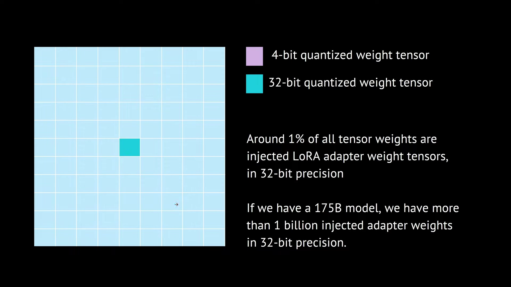
As Slide 12 points out, never forget the sheer scale of modern LLMs: if a base model has 175 billion parameters (like GPT-3), then 1% of those parameters is still over 1 billion trainable 32-bit weights! Even on a 65B or 7B model, tens to hundreds of millions of high-precision adapter parameters distributed across every linear layer of every transformer block provide more than enough capacity to learn domain-specific instruction following or reasoning.
The Forward Pass Dequantization Wave
Now watch what happens when a training batch enters the network for the forward pass:
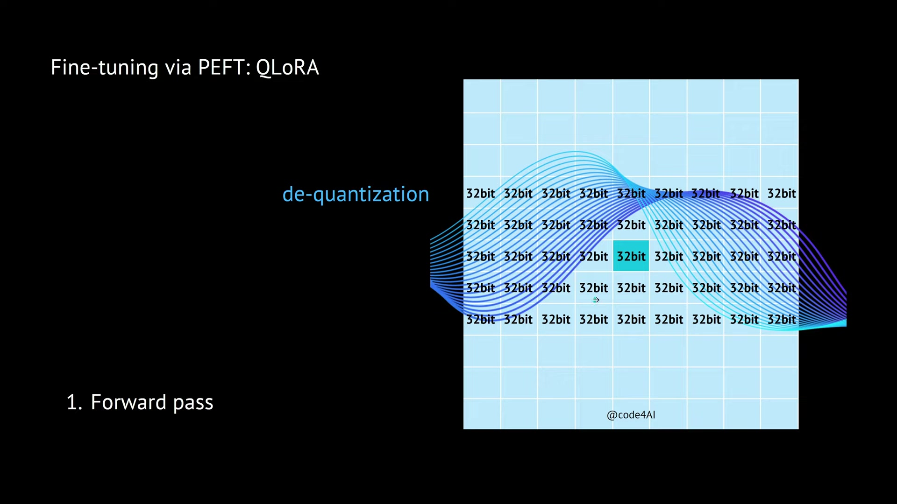
- Because the frozen base weights are stored in 4-bit NormalFloat, we cannot multiply them directly with high-precision activations.
- As the forward pass wave sweeps from left to right across the grid, each active column of 4-bit weights is dequantized on the fly to high precision (32-bit / 16-bit BF16)—shown by the tall yellow wave rising up out of the flat 4-bit blue tiles.
- The GPU performs the high-precision matrix multiplication for that layer (combining the dequantized base output with the high-precision LoRA adapter output) and immediately drops the dequantized base weights from memory as the wave moves to the next layer. At no point is the full model ever dequantized in VRAM simultaneously!
The Backward Pass (Backpropagation) Wave
Once the forward pass reaches the output layer and computes the cross-entropy loss $\mathcal{L}$, backpropagation begins:
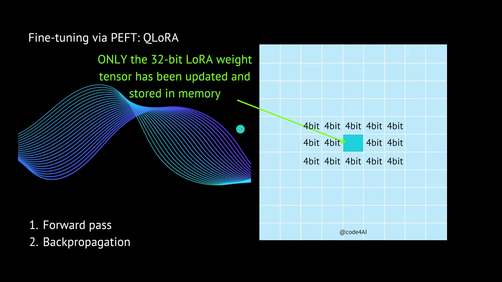
- To backpropagate the error signal $\frac{\partial \mathcal{L}}{\partial x}$ from the output back to earlier LoRA adapters, the backward wave sweeps right-to-left across the grid, again dynamically dequantizing each layer's frozen 4-bit weights to compute the backward matrix-vector products and then immediately discarding them.
- Look at the right-hand side of Slide 14 ("After forward and backward pass"): once the step completes, all 100 light-blue base weights sit untouched in their compact 4-bit storage format. Only the single bright-cyan 32-bit LoRA weight block in the center has its weights updated by the optimizer and saved in memory!
9. The 3D Hyperplane View: Why High-Precision LoRA Compensates for 4-Bit Dequantization Errors
Now we arrive at the deepest question in the entire lecture: Every single one of those 100 frozen base weights has a dequantization error (like the $0.0322$ error we calculated on Slide 9). Why doesn't the sum of billions of 4-bit rounding errors degrade the fine-tuned model compared to 16-bit fine-tuning?
Let's tilt our 10×10 grid into 3D space and look at what the 4-bit levels and 32-bit reconstructions actually look like geometrically:
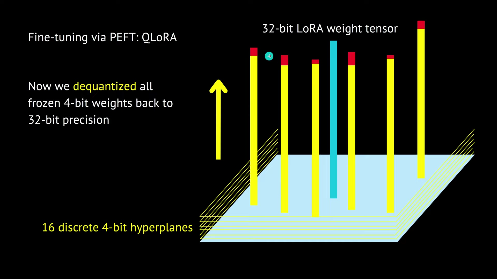
Follow the three visual elements in Slide 15:
- The 16 Discrete Blue Hyperplanes (Bottom): Because a 4-bit weight can only take $2^4 = 16$ discrete values, all stored base weights are forced to lie on one of 16 horizontal hyperplanes stacked at the base.
- The Dequantized 32-Bit Yellow Pillars (Middle): When the forward pass dequantizes those 4-bit codes back into 32-bit floats, each weight projects upward into continuous 32-bit space (the yellow columns).
- The Red Dequantization Error Tips (Top): Because each weight was snapped onto one of the 16 discrete hyperplanes during quantization, its reconstructed 32-bit height differs from its true pretrained FP32 height by a rounding error—shown as the red cap on top of every yellow pillar.
Slide 16 connects our earlier arithmetic directly to the 3D pillar: the true weight was $0.5678$, the 4-bit lookup rounded it to $0.6$, and the red error bar has height $0.6 - 0.5678 = 0.0322$ ($\approx 0.032$). Some pillars were rounded up (positive error), while others were rounded down (negative error).
Now look at what happens when we introduce the trainable 32-bit LoRA adapter pillar in the center of those noisy pillars:
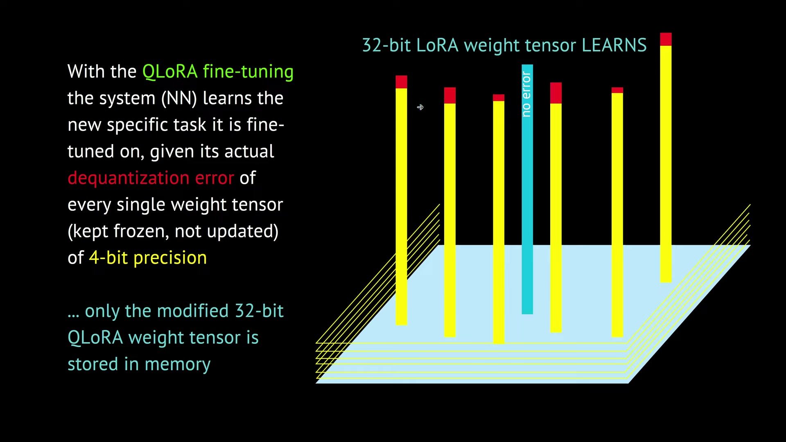
- The LoRA pillar has zero quantization error: Because the LoRA adapter weights are stored and updated in high precision (16-bit BF16 / 32-bit FP32), the cyan pillar is not restricted to the 16 discrete hyperplanes—it can take any continuous height with no red error cap.
- LoRA is trained after quantization, with the errors already frozen in the loop: We do not train LoRA on the clean FP32 model and then quantize afterward. Instead, we quantize the base model to 4-bit first. During every forward and backward pass of fine-tuning, the frozen red dequantization errors $E_{\text{dequant}} = \widehat{W} - W$ are already present in the layer output: $$y = \underbrace{(W + E_{\text{dequant}})}_{\widehat{W}\text{ (frozen 4-bit dequantized)}} x + \underbrace{\frac{\alpha}{r} B A}_{\text{high-precision LoRA}} x$$
- Automatic error absorption: Because the loss gradient $\nabla_{A,B}\mathcal{L}$ is computed from the sum $\widehat{W}x + \frac{\alpha}{r}BAx$, the high-precision LoRA adapter naturally adjusts its continuous weights to both learn the downstream fine-tuning task and cancel out the static, frozen dequantization errors $E_{\text{dequant}}$ of the surrounding 4-bit weights!
10. Experimental Results: LLaMA 5-Shot MMLU & Guanaco on OASST1
Does this geometric intuition hold up across real LLM benchmarks from 7B to 65B parameters? Slide 18 presents Table 4 from the QLoRA paper, comparing Mean 5-shot MMLU (Massive Multitask Language Understanding) accuracy across LLaMA 7B, 13B, 33B, and 65B when fine-tuned on two major instruction datasets (Alpaca and FLAN v2) using three different representations:
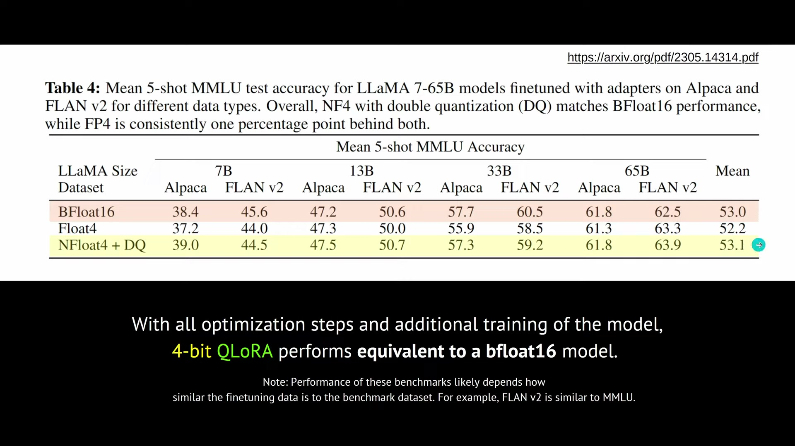
NFloat4 + DQ, mean 53.1%) completely recovers full 16-bit BFloat16 accuracy (mean 53.0%), outperforming standard Float4 (52.2%). Watch at 28:35.| Dataset & Model Size | BFloat16 (16-Bit Baseline) | Float4 (Standard FP4) | NFloat4 + DQ (QLoRA) |
|---|---|---|---|
| Alpaca · LLaMA 7B | 38.4 | 37.2 | 39.0 |
| Alpaca · LLaMA 13B | 47.2 | 47.3 | 47.5 |
| Alpaca · LLaMA 33B | 57.7 | 55.9 | 57.3 |
| Alpaca · LLaMA 65B | 61.8 | 61.3 | 61.8 |
| FLAN v2 · LLaMA 7B | 45.6 | 44.0 | 44.5 |
| FLAN v2 · LLaMA 13B | 50.6 | 50.0 | 51.4 |
| FLAN v2 · LLaMA 33B | 60.5 | 60.2 | 60.2 |
| FLAN v2 · LLaMA 65B | 62.5 | 62.1 | 63.2 |
| Mean Across All 8 Runs | 53.0 | 52.2 | 53.1 |
Notice two critical takeaways highlighted on Slide 18:
- NF4 + Double Quantization matches 16-bit BFloat16: Standard 4-bit floating point (
Float4) drops mean MMLU accuracy from $53.0\%$ to $52.2\%$, whereas 4-bit NormalFloat + Double Quantization (NFloat4 + DQ) achieves $53.1\%$—matching or slightly beating the 16-bit baseline while using a fraction of the VRAM. - Why dataset-benchmark alignment matters: As noted in green at the bottom of Slide 18 ("Note: Often performance on benchmarks means: similarity of fine-tuning dataset and benchmark dataset"), the exact same LLaMA-7B base model scores $38.4\%$–$39.0\%$ on MMLU when fine-tuned on Alpaca, but jumps to $44.5\%$–$45.6\%$ when fine-tuned on FLAN v2—because FLAN v2 contains academic exam-style tasks closely aligned with MMLU's 57 multiple-choice subjects.
Training Guanaco on OpenAssistant Conversations (OASST1)
To test conversational instruction following, the QLoRA authors fine-tuned LLaMA models on OASST1 (OpenAssistant Conversations Dataset) to create the Guanaco model family:
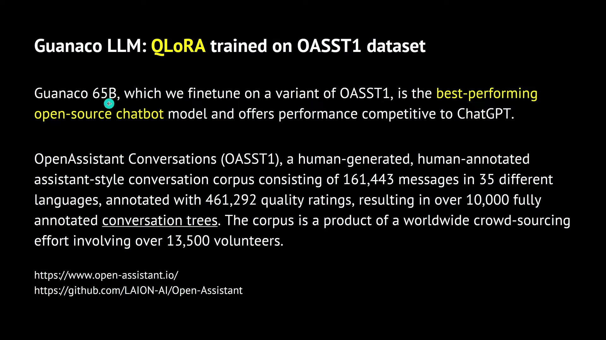
Unlike synthetic datasets distilled from GPT-3.5/GPT-4, OASST1 is a purely human-crowdsourced multilingual conversation corpus built by over 13,500 volunteers, containing 161,443 messages in 35 languages, 461,292 quality ratings, and over 10,000 fully annotated conversation trees. Fine-tuning LLaMA-65B on OASST1 with QLoRA produced Guanaco-65B (99.3% of ChatGPT on the Vicuna benchmark in 24 hours on a single 48 GB GPU), and the exact same dataset (`timdettmers/openassistant-guanaco`) powers the hands-on Falcon-7B Colab notebook next.
11. Step-by-Step Google Colab Walkthrough: Fine-Tuning Falcon-7B with QLoRA on a Free Tesla T4
In the final third of the video (33:15–38:20), the speaker walks through the complete Google Colab notebook (originally authored by Younes Belkada and Artidoro Pagnoni) demonstrating how to fine-tune Falcon-7B (`ybelkada/falcon-7b-sharded-bf16`) on the OpenAssistant Guanaco dataset (`timdettmers/openassistant-guanaco`) using a single free Google Colab Tesla T4 GPU (15 GB VRAM).
Step 1: Install Hugging Face TRL, PEFT, Accelerate & bitsandbytes
First, install the libraries that implement 4-bit NormalFloat kernels (`bitsandbytes`), Low-Rank Adapters (`peft`), device placement (`accelerate`), and supervised instruction tuning (`trl`):
pip install -q -U trl transformers accelerate git+https://github.com/huggingface/peft.git
pip install -q datasets bitsandbytes einops wandbStep 2: Load the Dataset & Configure 4-Bit NormalFloat (`BitsAndBytesConfig`)
Next, load the `timdettmers/openassistant-guanaco` training split and define the `BitsAndBytesConfig` that tells `bitsandbytes` to quantize the frozen base weights into 4-bit NormalFloat (`nf4`):
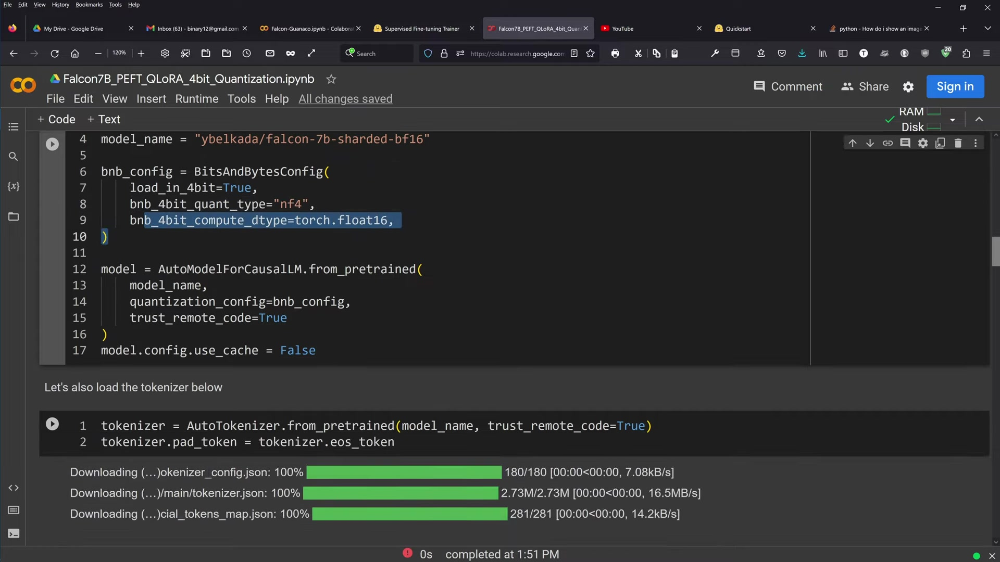
BitsAndBytesConfig in Google Colab to load ybelkada/falcon-7b-sharded-bf16 in 4-bit NormalFloat (bnb_4bit_quant_type="nf4") with 16-bit compute dtype. Watch at 34:42.import torch
from datasets import load_dataset
from transformers import AutoModelForCausalLM, AutoTokenizer, BitsAndBytesConfig
# 1. Load the human-annotated OpenAssistant Guanaco dataset (~9,846 examples)
dataset_name = "timdettmers/openassistant-guanaco"
dataset = load_dataset(dataset_name, split="train")
# 2. Load sharded Falcon-7B with 4-bit NormalFloat (NF4) quantization
model_name = "ybelkada/falcon-7b-sharded-bf16"
bnb_config = BitsAndBytesConfig(
load_in_4bit=True, # Enable 4-bit storage quantization
bnb_4bit_quant_type="nf4", # Use 4-bit NormalFloat (NF4) codebook
bnb_4bit_compute_dtype=torch.float16, # T4 GPU uses FP16 compute (use torch.bfloat16 on Ampere A100/RTX 3090+)
bnb_4bit_use_double_quant=True, # Optional: enable Double Quantization of block scales
)
model = AutoModelForCausalLM.from_pretrained(
model_name,
quantization_config=bnb_config,
trust_remote_code=True,
)
model.config.use_cache = False # Disable KV cache during gradient-checkpointed training
tokenizer = AutoTokenizer.from_pretrained(model_name, trust_remote_code=True)
tokenizer.pad_token = tokenizer.eos_tokenNotice two practical details emphasized in the video:
- Why use `ybelkada/falcon-7b-sharded-bf16`? Sharding splits the 14 GB checkpoint into 8 smaller ~1.8 GB shard files so that each shard can be loaded into CPU RAM, quantized to 4-bit NF4 on the GPU, and freed before the next shard loads—preventing out-of-memory crashes on Google Colab's 12.7 GB system RAM.
- Why `torch.float16` instead of `torch.bfloat16` here? While the QLoRA paper uses `bfloat16` on A100 GPUs, Google Colab's free Tesla T4 is a Turing-generation GPU (compute capability 7.5) without native `bfloat16` Tensor Core acceleration. Setting `bnb_4bit_compute_dtype=torch.float16` lets the T4 run fast 16-bit Tensor Core matrix multiplications after dequantizing each NF4 block.
Step 3: Configure `LoraConfig` Across All Linear Layers
One of the most important empirical findings of the QLoRA paper is that when the base model is quantized to 4-bit, attaching LoRA only to the attention query and value projections ($W_q, W_v$) is not enough—you must apply LoRA adapters to all linear layers in the transformer block (attention projections + MLP feed-forward projections) to match full 16-bit fine-tuning performance:
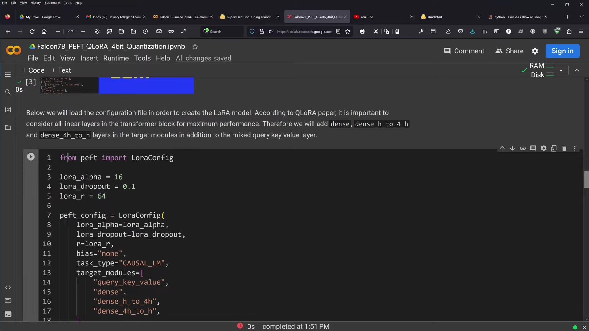
LoraConfig with rank $r = 64$, $\alpha = 16$, and targeting all four linear projection modules in Falcon's transformer blocks (query_key_value, dense, dense_h_to_4h, dense_4h_to_h). Watch at 35:15.from peft import LoraConfig
lora_alpha = 16
lora_dropout = 0.1
lora_r = 64
peft_config = LoraConfig(
lora_alpha=lora_alpha,
lora_dropout=lora_dropout,
r=lora_r,
bias="none",
task_type="CAUSAL_LM",
target_modules=[
"query_key_value", # Fused QKV attention projection
"dense", # Attention output projection
"dense_h_to_4h", # MLP up-projection (d_model -> 4 * d_model)
"dense_4h_to_h", # MLP down-projection (4 * d_model -> d_model)
],
)Step 4: Configure `paged_adamw_32bit`, Upcast LayerNorms to FP32, and Train
Next, we configure `TrainingArguments` with QLoRA's 32-bit Paged AdamW optimizer (`optim="paged_adamw_32bit"`), initialize TRL's `SFTTrainer`, and explicitly upcast all normalization layers (`LayerNorm`) to `torch.float32` for numerical stability:
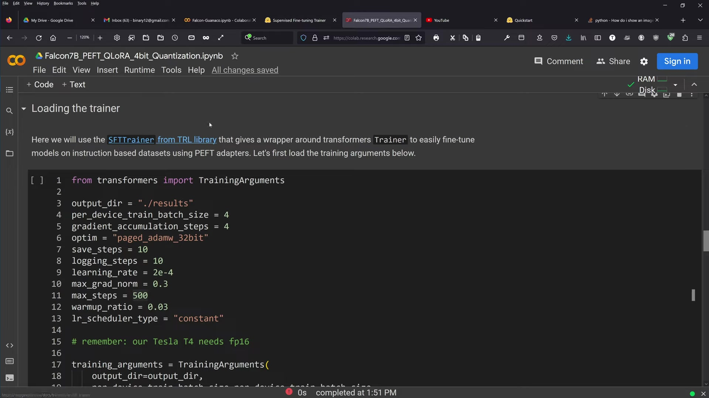
optim = "paged_adamw_32bit" and hyperparameters in TrainingArguments. Watch at 35:25.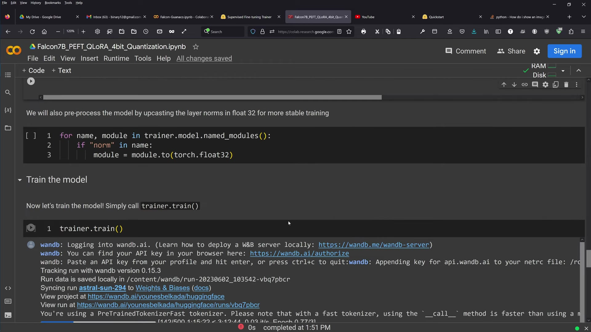
SFTTrainer and upcasting all normalization layers ("norm" in name) to torch.float32 for stable mixed-precision training. Watch at 36:20.from transformers import TrainingArguments
from trl import SFTTrainer
output_dir = "./results"
per_device_train_batch_size = 4
gradient_accumulation_steps = 4
optim = "paged_adamw_32bit"
save_steps = 10
logging_steps = 10
learning_rate = 2e-4
max_grad_norm = 0.3
max_steps = 500
warmup_ratio = 0.03
lr_scheduler_type = "constant"
training_arguments = TrainingArguments(
output_dir=output_dir,
per_device_train_batch_size=per_device_train_batch_size,
gradient_accumulation_steps=gradient_accumulation_steps,
optim=optim,
save_steps=save_steps,
logging_steps=logging_steps,
learning_rate=learning_rate,
fp16=True, # Use FP16 mixed precision on Tesla T4
max_grad_norm=max_grad_norm,
max_steps=max_steps,
warmup_ratio=warmup_ratio,
group_by_length=True, # Group sequences of similar lengths to minimize padding
lr_scheduler_type=lr_scheduler_type,
)
max_seq_length = 512
trainer = SFTTrainer(
model=model,
train_dataset=dataset,
peft_config=peft_config,
dataset_text_field="text",
max_seq_length=max_seq_length,
tokenizer=tokenizer,
args=training_arguments,
)
# Upcast all normalization layers (LayerNorm) to FP32 for training stability
for name, module in trainer.model.named_modules():
if "norm" in name:
module = module.to(torch.float32)
# Launch QLoRA fine-tuning
trainer.train()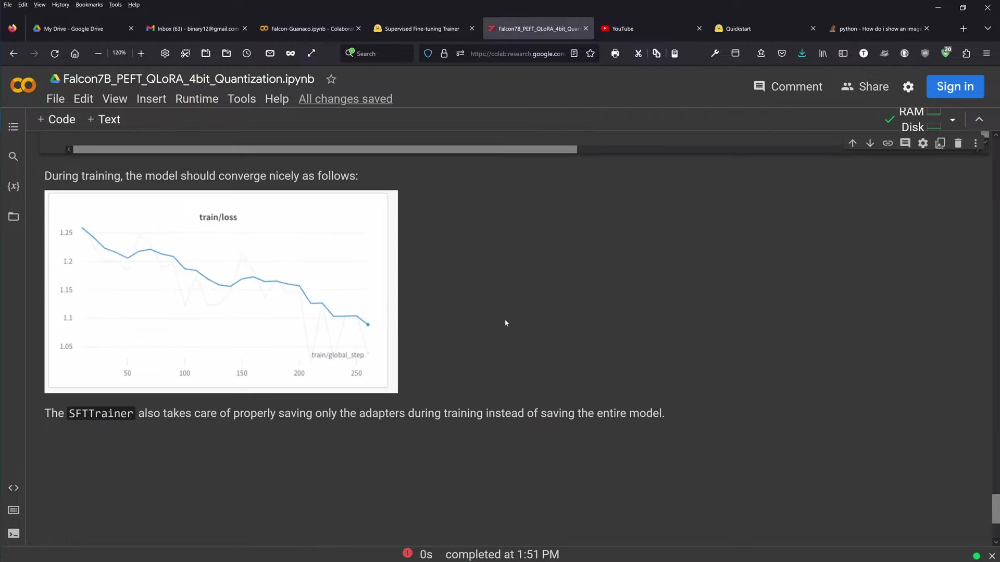
trainer.train() on a single free Colab Tesla T4 GPU — the 7-billion-parameter Falcon model trains smoothly within the 15 GB VRAM budget as training loss drops from $1.3265 \to 1.1965$. Watch at 36:48.12. Synthesis: Complete QLoRA Architecture & Three Reasons Why LoRA Stays in High Precision
Slide 23 brings together every piece of the QLoRA puzzle onto a single reference canvas:

Finally, the lecture concludes by answering a great interview and design question: Why are the LoRA adapter weights always kept in high precision (16-bit BF16 or 32-bit FP32) rather than also being quantized?
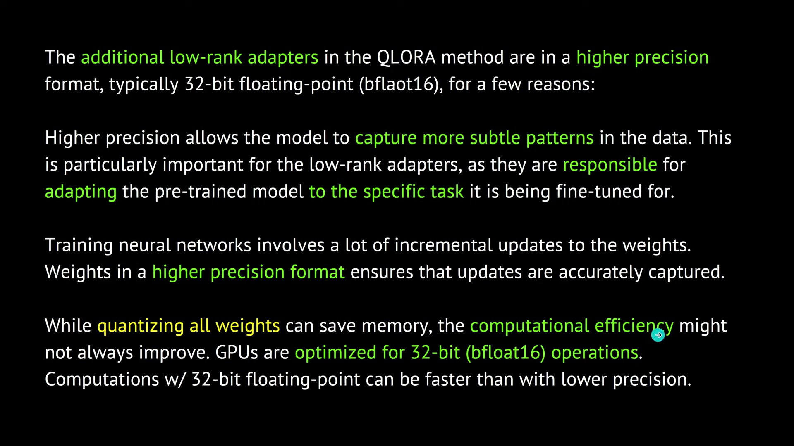
- Precision in Learning: The primary role of the adapter weights is to learn task-specific adaptations during fine-tuning (and simultaneously compensate for the base model's frozen dequantization errors). High precision is necessary for these weights to capture subtle patterns and nuances in the training data, which would be lost if they were restricted to 16 coarse 4-bit levels.
- Gradient Updates: During backpropagation, adapter weights are updated at every step using small incremental gradients ($\Delta w = -\eta g$). High precision is crucial for accurately accumulating these tiny updates step after step; lower precision would cause severe rounding errors or gradient underflow, stalling optimization.
- Hardware Optimization: Modern GPUs (NVIDIA Tensor Cores) are natively engineered and optimized for 16-bit (`BF16`/`FP16`) and 32-bit (`FP32`/`TF32`) floating-point matrix arithmetic. Because the LoRA adapters represent only ~1% of the total parameter count, keeping them in high precision costs negligible memory while unlocking full hardware speed and full 16-bit accuracy.
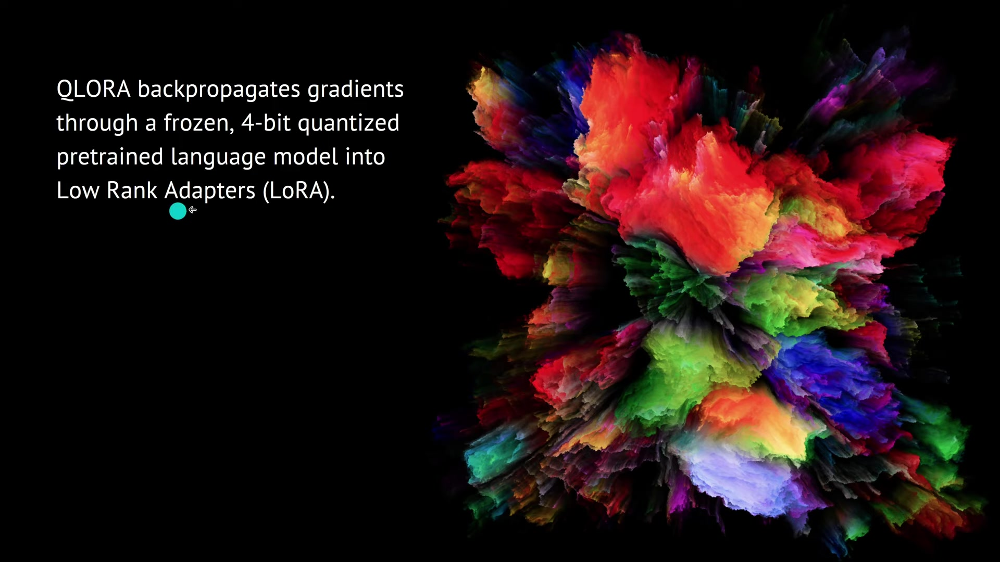
References & Further Reading
- Discover AI — Understanding 4bit Quantization: QLoRA explained (w/ Colab) (YouTube video lecture).
- Dettmers, T., Pagnoni, A., Holtzman, A., & Zettlemoyer, L. (2023) — QLoRA: Efficient Finetuning of Quantized LLMs (NeurIPS 2023, arXiv:2305.14314).
- Köpf, A., et al. (2023) — OpenAssistant Conversations — Democratizing Large Language Model Alignment (NeurIPS 2023 Datasets and Benchmarks).
- Companion Deep Dive in the Quantization Series: NormalFloat 4 (NF4) & Double Quantization Explained — Deriving the exact 16 Gaussian quantile codebook values of NF4 and testing blockwise Double Quantization in Python.